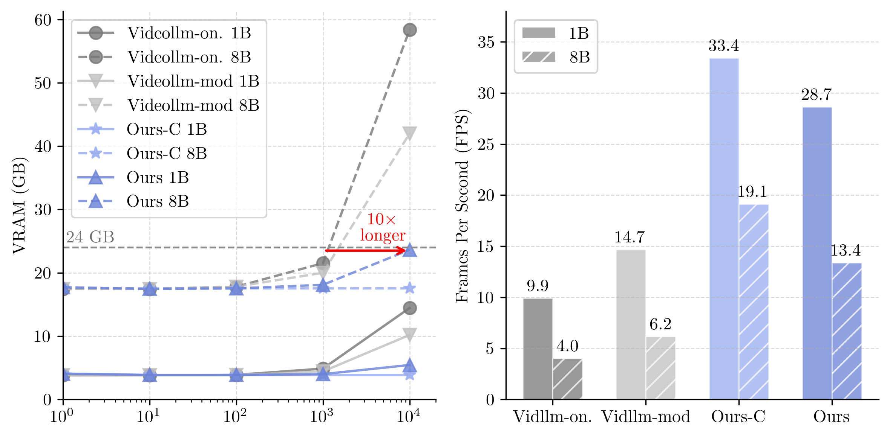
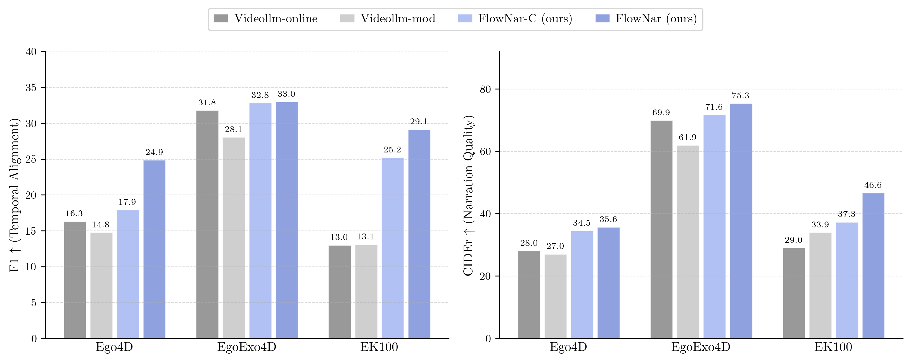
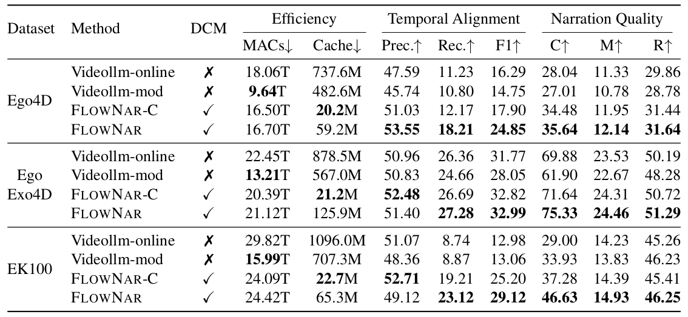
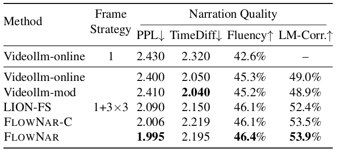

After each narration segment, the visual KV cache is pruned entirely. This keeps GPU memory bounded and prevents error propagation from misaligned history narrations into future segments.
O(1) VRAMHistorical frames are compressed into a fixed-size set of learnable memory tokens via recurrent cross-attention. Per-step compute and memory stay constant regardless of how many frames have been processed.
Constant per-step computeBaselines and FlowNar are evaluated using only their own generated history — no oracle text. This honest setting exposes compounding errors that teacher-forcing evaluation hides.
Deployment-realisticEvaluated on Ego4D, EgoExo4D, and EK100. On EK100, reduces KV cache usage by up to 48.3× compared to VideoLLM-Online, while achieving the best temporal alignment F1 scores across all datasets through robust dynamic context management (DCM).
3 benchmarksA streaming pipeline that couples a fixed-size recurrent memory with aggressive context pruning to stay efficient at any video length.
Frame encoding. Each incoming video segment is encoded into visual tokens by a frozen vision encoder.
CLAM memory update. A gated recurrent mechanism sequentially processes the new visual tokens to update a fixed-size memory state. Learnable queries then read from this final state to produce the fixed-size memory tokens — O(1) per step.
LLM narration. The LLM receives current visual tokens + the compact CLAM memory as context and generates the segment narration autoregressively.
DCM pruning. After generation, all visual KV-cache entries are discarded. Only the CLAM memory carries visual information forward — breaking the linear growth of context that limits prior methods.
Key invariant: the KV-cache size at step t depends only on the current segment length, not on t itself. This is what makes FlowNar theoretically unbounded in video length.
FlowNar's KV-cache footprint stays flat or grows slowly as videos grow longer. Competing methods pay linearly — and eventually run out of memory.

Fig. 4 — (Left) VRAM usage as video length increases. Ours-C stays flat and Ours grows slowly, while baselines grow unboundedly. (Right) Throughput on an H100 measured over 10K frames. FlowNar achieves roughly 3× higher FPS than Videollm-online.

Fig. 5 — F1 and CIDEr comparison across Ego4D, EgoExo4D and EpicKitchens-100 under the self-conditioned protocol. FlowNar and FlowNar-C consistently show higher performance than baselines.
Self-conditioned protocol — the model conditions only on its own previously generated narrations (deployment-realistic). With our dynamic context management (DCM), FlowNar variants consistently demonstrate significant improvements over the baselines.

Teacher-forcing (oracle) protocol — the model is given ground-truth history narrations. FlowNar performs on par with baseline models.

If FlowNar is useful in your research, please consider citing: